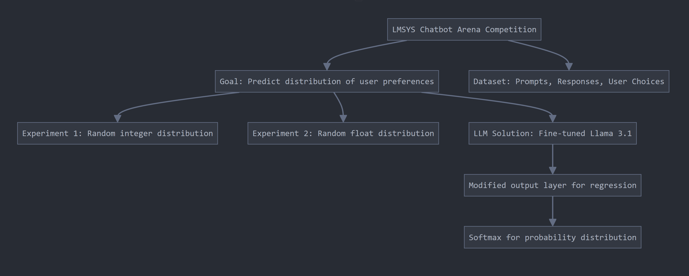

0. Introduction
There are 5 tiers on Google’s AI competition community Kaggle. Currently, I am tier 2. My goal is to get tier 3 then tier 4 by participating at least one hour everyday. I am writing this blog series to keep a journal on this journey.
1. Binary Prediction of Poisonous Mushrooms (Kaggle Playground Series - Season 4, Episode 8)
This project is a simple structured tabular data with a goal of predicting a response variable, ‘class’. Additionally, response variable is binary meaning that we want to predict the mushroom is ‘edible’ or ‘poisonous’. Full competition description
During my usual EDA (exploratory data analysis), I have noticed that there are a number of columns with big chunk of nulls.
Curious if anyone had done anything about this on Kaggle, to my surprise, most people were just dropping these columnn saying something like ‘due to 90% of it being nulls, we are dropping…’. I believe they may be overlooking at the fact that the total train set size is a million so even 10% is around a hundred thousand samples which is a whole dataset by itself. I thought up of some solutions.
- Treat nulls as a seperate class - ended up having best score 0.98405
- Fill nulls with imputation methods such as median or knn
- Fill nulls with Random Forest models - ended up having bad score 0.57754
In this notebook, I have simply predicted all the null rows using XGBoost classifier. Although the test sets have good accuracy, the final score with this approach didn’t do well.
I have opened up a discussion to fellow Kagglers. From this discussion I’ve learned that.
- Although ‘id’ was the top feature importance for building XGBoostClassifier, most people seem to disagree with using ‘id’ as a feature. Reason having overfitted models and the dataset being synthetic. I didn’t drop ‘id’ on purpose because it appeared to have some information, perhaps representing time by matching lower id = past and higher id = present.
- ‘id’ showing up as top feature importance may be due to the fact that it was used the most when splitting the node during training. I may have been misreading the plot
- The competition dataset was generated data so some suggested that filling out nulls from same distribution may be the reason why score was low for XGBoost filled nans approach.
Satisfied with everything I have learned from coding and discussing, I moved onto more interesting competition called Cancer Detection ISIC 2024. This one is interesting because it has both tabular data and image data, linked with ids. Immediately, I think EfficientNet and XGBoost but how would I be weighting each prediction? I will write it on my next blog

2. Introduction to LMSYS Human preference prediction
This project is based on Kaggle competition held by LMSYS - Kaggle - LMSYS Chatbot Arena Human Preference Prediction. To understand this competition, we need to understand the following. - Chatbot Arena: An open-source research project developed by members from LMSYS and UC Berkeley SkyLab. The project evaluate LLMs by human preference in the real-world.
Chatbot Arena seeks to address a fundamental question: ‘Which LLM is the best?’. For example, ‘How does GPT-4 compare to Llama 3.1?’ When presented with the same prompt, both models generate reasonable responses. However, determining which answer is superior depends on the context, and this distinction can be challenging to define. To navigate this ambiguity, we leverage the wisdom of the crowd, relying on human evaluators to assess which response is more effective.
Ideally, we would see a unanimous consensus, but in reality, opinions often diverge. For instance, out of 100 respondents, 99 may prefer the GPT-4 response, while one individual may find the Llama 3.1 answer more suitable due to their unique perspective or experience. Notably, this competition discourages disregarding outlier opinions.

2.1. Dataset
Take a moment to read the following snippet of train data
| id | model_a | model_b | prompt | response_a | response_b | winner_model_a | winner_model_b | winner_tie |
|---|---|---|---|---|---|---|---|---|
| 30192 | gpt-4-1106-preview | gpt-4-0613 | [“Is it morally right to try to have a certain percentage of females on managerial positions?”, “OK …”] | [“The question of whether it is morally right to aim for a certain percentage of females in manageri…”] | [“As an AI, I don’t have personal beliefs or opinions. However, I can tell you that the question of …”] | 1 | 0 | 0 |
| 53567 | koala-13b | gpt-4-0613 | [“What is the difference between marriage license and marriage certificate?”, “How can I get both of …”] | [“A marriage license is a legal document that allows a couple to get married. It is issued by a gove…”] | [“A marriage license and a marriage certificate are two different legal documents that have separate…”] | 0 | 1 | 0 |
| 65089 | gpt-3.5-turbo-0613 | mistral-medium | [“explain function calling. how would you call a function?”] | [“Function calling is the process of invoking or executing a function in a programming language. To …”] | [“Function calling is the process of invoking a function in a program. A function is a block of code…”] | 0 | 0 | 1 |
Each row in the dataset corresponds to an individual user’s response, where they have selected either ‘winner_model_a’, ‘winner_model_b’, or ‘winner_tie’, denoted by a value of 1. This choice indicates which model’s response they deemed superior or if they perceived the responses to be of equivalent quality, given the provided ‘prompt’.
It is essential to note that the primary objective of this competition is to predict the distribution of user preferences, specifically the percentage of users who will favor ‘winner_model_a’, ‘winner_model_b’, or ‘winner_tie’. The focus is not on determining which response is objectively better, but rather on accurately forecasting user opinions. This nuance was initially unclear to me, and it is crucial to distinguish between these two aspects to avoid confusion.
2.2. Prediction
Take a look at the example submission.
| winner_model_a | winner_model_b | winner_tie |
|---|---|---|
| 0.333333333333333 | 0.333333333333333 | 0.333333333333333 |
| 0.333333333333333 | 0.333333333333333 | 0.333333333333333 |
| 0.333333333333333 | 0.333333333333333 | 0.333333333333333 |
Here, we have predicted that user’s vote would be evenly distributed.
For experiment and learning purposes, I have created two submissions. 1. Random distribution of integers adding up to 1 - Scored 23.781 (1717/1719 place) 2. Random distribution of floats adding up to 1 - Scored 1.349 (1669/1719 place)
From these scores, we can learn that predicting a solution rather than predicting user distribution is heavily penalised.
2.3. Large language model solutions
2.3.1. llama3.1 finetune on train data
At the time of writing, Meta has recently released a new open-source model, Llama 3.1, which presents an exciting opportunity for fine-tuning. However, a key challenge arises from the model’s default behavior, as it is designed to generate the most probable word sequence from its dictionary. In contrast, our competition requires a regression output that predicts user distribution in floating-point values. To address this, we modify the output layer of Llama 3.1 by replacing it with a trio of neurons, enabling classification into one of three categories.
Remember, this is not a classification competition. Therefore, the activation before the classification is passed through a softmax function, ensuring that the probabilities sum to unity, thereby aligning with the desired regression output format.
The competition ended quicker than I hoped but I have learned very important skills. 1. Saving model and loading model. Because Kaggle uses its own compute, we get limited 12 hour per session. Once it shutsdown, the notebook resets, deleting everything in output folder. Only way to save a model on Kaggle is to save the notebook itself by running ‘save version’ option.
Below we see an example of saving a notebook and loading it from a different ‘inference notebook’ via path - /kaggle/input/k/leetolo/lmsys-llama-3-tpu-train/llama_3_finetuned_model2.pth. You can also see competition data and base model architecture from Meta.
Well since the competition ended, let us examine winner’s solution - notebook by Sayoulala.
- First of all, winner adds additional 200k dataset discovered by other users who have uploaded publicly. This is a common problem in Kaggle that I’ve noticed where data source is leaked.
- Winner trains on three models, llama3 70b, qwen2 72b and gemma2-9b using AutoModelForSequenceClassification ensembling.
- QLoRA - I wasn’t familiar with this technique so I have read the paper. Basically, it significantly reduce the time and resource required to finetune a 60b+ parameter models while maintaining very good performance.
- Distillation original, Distillation practical - I wasn’t familiar with this technique either so I have read the papers. Basically, it’s an alternative model ensembling method where smarter (bigger) model is used to train dumber (smaller) model. This way we save compute resources and time, while maintaining high performance. The writer claims that this idea won him the event.
Resources